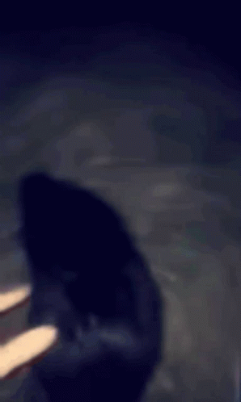
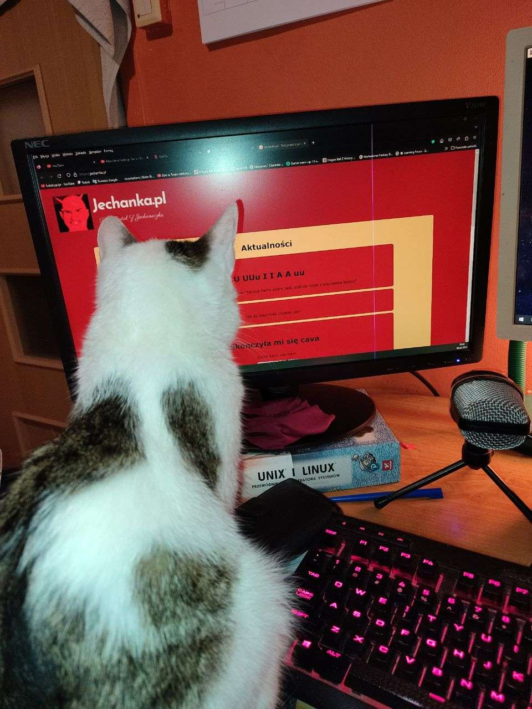
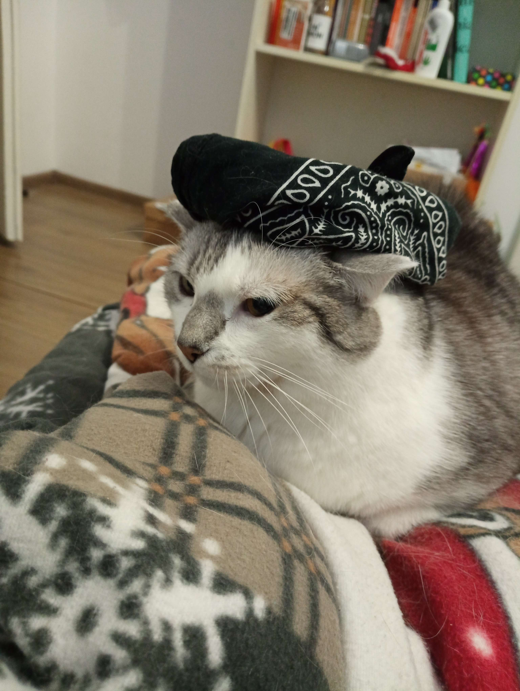

ze od marca nie bylo zadnej aktualizacji. Nie jest najlepiej, a oprocz tego oglaszam
konkurs na najlepsze obrazki do kalendarza na rok 2024, kontrybucje proszę wysyłać wiecie gdzie.
21-03-2023 01:46
Tak se pomyslalem
Tak se pomyslalem, ze musze w koncu zrobic jakis update jechanki ale nie czuje sie ostatnio najlepiej
malo jechankowo musze przyznac nie jeste najlepiej ale postaram sie mam jeszcze pare pomyslow jak ulepszyc
jechanke aby portal z jechaneczka byl jeszcze lepszy
zara ide do pracy

06-03-2023 18:48
Wrucilem
Wrucilem, pozdro dla was

03-03-2023 20:14
U UUu I I A A uu
Vamos a la playa, tym tyn tun
"Keczup heins dobry jest, dobrze robia z wloclawka lepszy"
02-03-2023 18:28
Ide do biedronki chcecie cos?
02-03-2023 15:41
Skonczyła mi się cava
Kurde kawy nie mam

02-03-2023 12:31
Konkurs Plastyczny Szkoły Podstawowej im. Jana Pawła II w Łąkocie Górnej
Uczniowie z klas Ib, II i IIIb wzięli udział w konkursie plastycznym na najciekawszą ilustrację do wiersza
,,Stefek Burczymucha" - Marii Konopnickiej. Twórcy najciekawszych prac zostali nagrodzeni
książkami zakupionymi w ramach Narodowego Programu Rozwoju Czytelnictwa dotyczącego rozwijania
zainteresowań uczniów przez promowanie i wspieranie rozwoju czytelnictwa wśród dzieci i młodzieży.
W 2023 r. w naszym kraju nadal będzie obowiązywać zakaz jechanki w niedziele. Sklepy mają prowadzić jechaneczke tylko w wyznaczonych terminach, łącznie takich dni wyznaczono zaledwie 7.
W pozostałe niejechankowe niedziele dyskonty, supermarkety, drogerie, markety remontowo-budowlane się nie otworzą. Ponadto nie zrobimy również jechaneczki w galeriach handlowych.
Poniżej wskazaliśmy wszystkie daty z wolną jechanką w niedziele w 2023 r.
W tym miejscu chcemy przypomnieć, że 1 lutego 2022 r. weszła w życie znowelizowana ustawa o zakazie jechanki w niedziele, która w znaczący sposób ograniczyła działalność yomeników i koksów z usługami pogowymi/kurwierskimi,
które pozwalały na legalne ominięcie zakazu jechanki. Znowelizowana ustawa zobowiązuje takich koksów do wykazywania 40 proc. przychodów z usług pogowych/kurwierskich co miesiąc.
Dla większości jest to warunek nie do spełnienia.